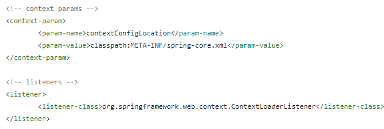

Context上下文环境
Don’t be jealous of others. Because you never know how much you will get in the next second.
Web上下文（Servlet Context）
Spring 上下文（WebApplication Context）
Spring MVC上下文（mlWebApplication Context）
首先，javaee标准规定了，servlet容器需要在应用项目启动时，给应用项目初始化一个ServletContext作为公共环境容器存放公共信息。 ServletContext中的信息都是由容器提供的。因为Servlet没有main方法，无法独立运行，所以需要通过Servlet容器进行初始化和调用其里面的方法。 首先说一下我对Servlet启动的理解，Servlet生命周期主要经过了初始化，运行，销毁三个阶段，当一个请求过来时， Servlet容器首先会首先查找对应的Servlet是否存在，如果存在，则直接调用里面的service方法，如果不存在，则根据包名加类名找到对应的class文件， 通过反射的原理进行实例化，并为之生成一个ServletConfig对象作为初始化参数传入，调用service方法时， 生成HttpServletRequest和HttpServletResponse作为参数传入。
一.首先是Servlet容器，也就是Servlet Context，通过自定义contextListener获取web.xml中配置的参数
1.容器启动时，找到配置文件中的context-param作为键值对放到ServletContext中
2.然后找到listener，容器调用它的contextInitialized(ServletContextEvent event)方法，例如程序中
/**
* 容器启动时初始化数据
*/
public class InitDataListener implements ServletContextListener {
@Override
public void contextInitialized(ServletContextEvent contextEvent) {
// spring 上下文
ApplicationContext appContext = WebApplicationContextUtils.
getWebApplicationContext(contextEvent.getServletContext());
ResourceService resourceService =
(ResourceService) appContext.getBean("resourceService");
ServletContext servletContext = contextEvent.getServletContext();
servletContext.setAttribute(PmsConstants.URL_PERMISSION_MAP,
resourceService.getSysResourceAndPermissionMapping());
}
@Override
public void contextDestroyed(ServletContextEvent sce) {
}
}二.在上述代码中还有一个Spring 上下文（WebApplication Context），spring为我们提供了实现ServletContextListener接口的上下文初始化监听器：
org.springframework.web.context.ContextLoaderListener

spring为我们提供的IOC容器，需要我们指定容器的配置文件，然后由该监听器初始化并创建该容器。要求你指定配置文件的地址及文件名称，一定要使用：contextConfigLocation作为参数名称。这个就是我们一开始就会在web.xml中配置的内容，该监听器，默认读取/WEB-INF/下的applicationContext.xml文件。但是通过context-param指定配置文件路径后，便会去你指定的路径下读取对应的配置文件，并进行初始化。 ServletContext是由Servlet容器初始化的，那Spring的ContextLoaderListener也会进行相应的初始化具体步骤是
1.servlet容器启动，为应用创建一个“全局上下文环境”：ServletContext
2.容器调用web.xml中配置的contextLoaderListener，初始化WebApplicationContext上下文环境（即IOC容器），加载context-param指定的配置文件信息到IOC容器中。WebApplicationContext在ServletContext中以键值对的形式保存。
3.容器初始化web.xml中配置的Servlet（这里具体也就是指的是我们的DispatcherServlet），为其初始化自己的上下文信息ServletContext，并加载其设置的配置信息到该上下文中。将WebApplicationContext（Spring 上下文）设置为它的父容器。大致图片如下
4.此后的所有servlet的初始化都按照3步中方式创建，初始化自己的上下文环境，将WebApplicationContext设置为自己的父上下文环境。
对于作用范围而言，在DispatcherServlet中可以引用由ContextLoaderListener所创建的ApplicationContext中的内容，而反过来不行。 当Spring在执行ApplicationContext的getBean时，如果在自己context中找不到对应的bean，则会在父ApplicationContext中去找。 所以，web容器初始化webApplicationContext时作为公共的上下文环境，只需要将service、dao等的配置信息在这里加载，而servlet自己的上下文环境信息不需要加载。故，在applicationContext.xml中将@Controller注释的组件排除在外，而在dispatcherServlet加载的配置文件中将@Controller注释的组件加载进来，方便dispatcherServlet进行控制和查找。
最后也就是我后来想的一个问题：既然spring mvc的上下文继承了spring的上下文，那么其实spring mvc把全部包都扫了好像也不会出问题，只不过把继承至父类的bean覆盖掉而已。
答：这种情况下，首先容器启动后获取bean是先从子容器中取，如果springmvc把所有的包都扫描， 那spring管理的bean都不取到，也就是事务等spring框架配置的那些bean都取不到，你拿到的只是普通的bean。事务管理将无效。